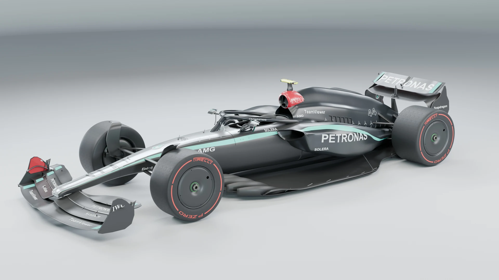
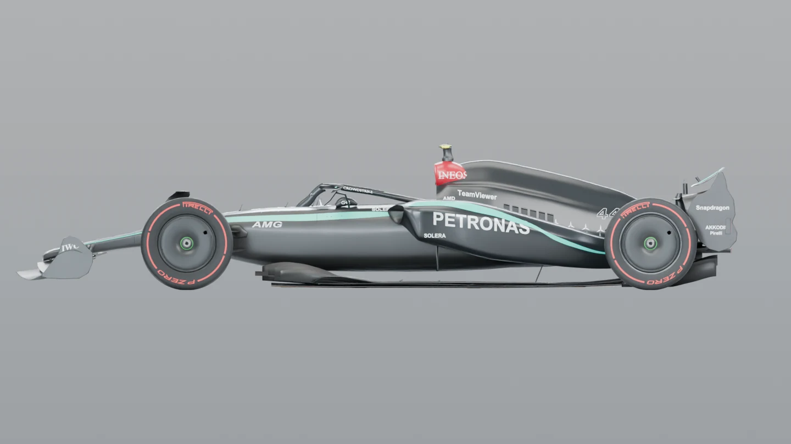
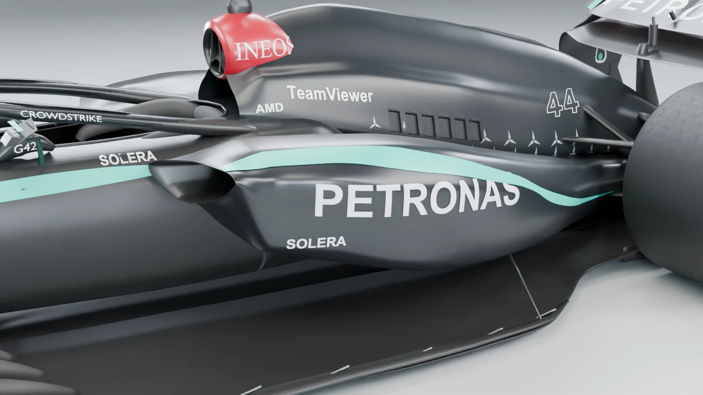
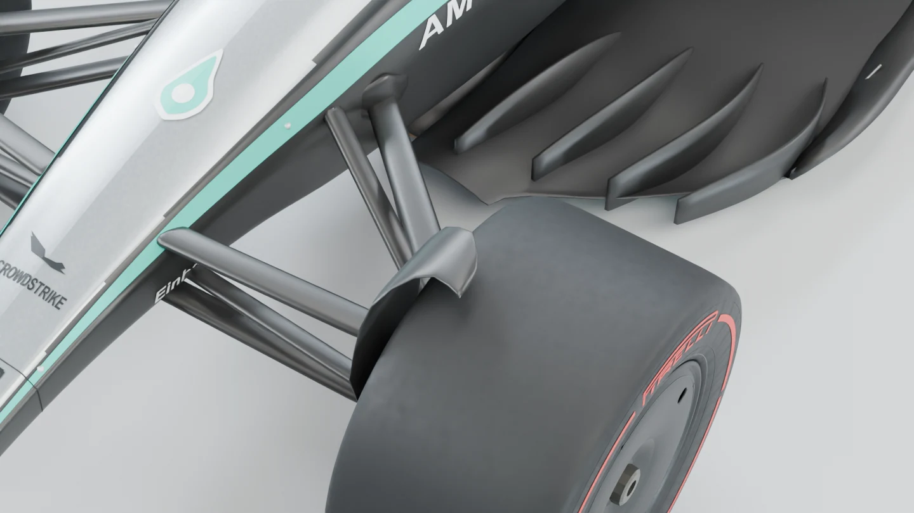
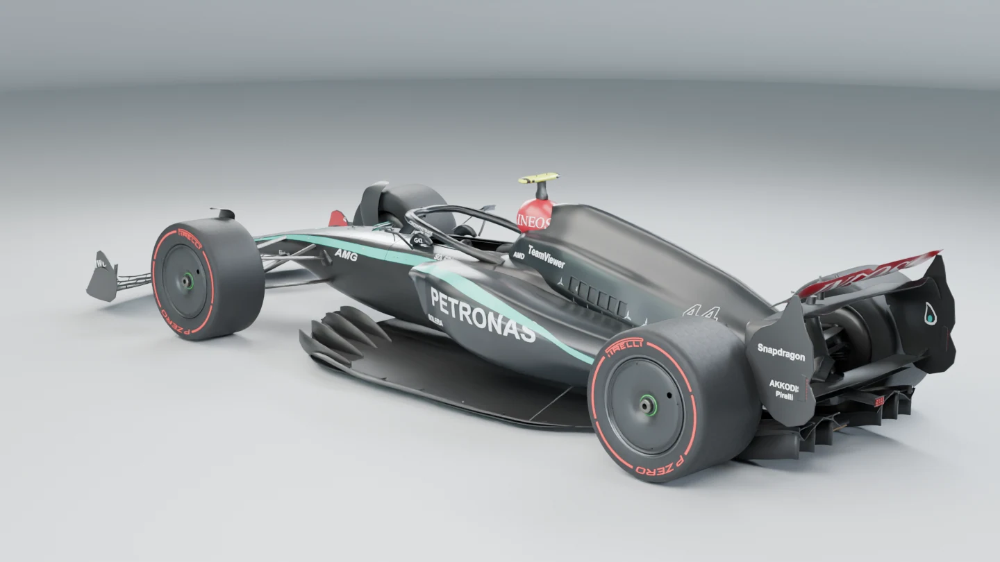

Formule 1 · Blender
Mercedes-AMG W15
Lewis Hamilton n° 44 · Grand Prix de Bahreïn · 2 mars 2024
La n° 63 reprend les marquages observés à Bahreïn.

Inspecter un détail
La W15 de Bahreïn
Mercedes inaugure un nouveau châssis et un nouveau carter de boîte en 2024. Le cockpit recule et la suspension arrière passe aux poussoirs. La galerie présente la n° 44 de Lewis Hamilton avec les pneus tendres C3 à flanc rouge du départ. Hamilton termine septième à Sakhir, deux places derrière son coéquipier George Russell, au volant de la n° 63.
- Longueur
- > 5 m
- Largeur
- 2 m
- Hauteur
- 970 mm
- Masse
- 798 kg
Dimensions et fiche technique Mercedes
Les détails à observer








Du nez au plancher
À Bahreïn, le premier profil de l’aileron avant reste séparé du nez et une fine bande relie le volet supérieur. Mercedes décrit aussi une nouvelle courbure des cloisons d’entrée du plancher et deux profils d’aileron inférieur revus.
Reconstitution à partir de photographies et de documents publics. L’intérieur des conduits, les volumes cachés du plancher et la course du volet DRS dans la visionneuse sont estimés.